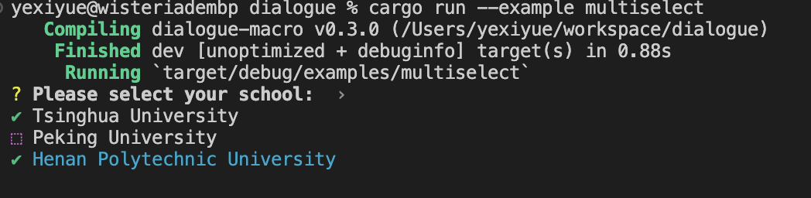

Theme
在使用 dialogue_macro 库中的 Asker 和 EnumAsker 特性修饰结构体或枚举时，可以通过在派生宏中指定 theme 参数来自定义用户交互界面的主题风格。主题需要实现 dialoguer::theme::Theme 和 Default 两个特质。
注意：
如果不特别指定 theme 参数，则默认采用 dialogue_macro::ColorfulTheme 这一彩色主题。
示例
下面的示例展示了如何使用 dialoguer 库提供的 ColorfulTheme 彩色主题：
#![allow(unused)] use dialogue_macro::Asker; #[derive(Asker, Debug)] // 指定主题色 #[asker(theme = "dialoguer::theme::ColorfulTheme")] struct User { #[multiselect(prompt = "Please select your favorite", options = ["Eat", "Sleep", "Code"], default = [1])] favorite: Vec<String>, #[multiselect( prompt = "Please select your school: ", with_default = true, options = [ School { name: "Tsinghua University".to_string() }, School { name: "Peking University".to_string() }, School { name: "Henan Polytechnic University".to_string() } ] )] school: Vec<School>, } #[derive(Debug, Clone)] struct School { name: String, } impl ToString for School { fn to_string(&self) -> String { self.name.clone() } } fn main() { let user = User::asker() .school(&[true, false, true]) .favorite() .finish(); println!("{:?}", user); }
